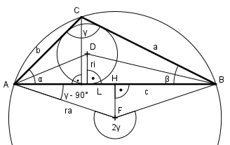

Aufgabe 141 Berechnen Sie den Umkreisradius ra und den Inkreisradius ri eines Dreiecks, wenn a = 32,1 m, b = 13,2 m und c = 39,4 m.

Im Dreieck ABC: Es liegt der Fall SSS (Seite a, Seite b, Seite c) vor. Der Fall hat dann eine eindeutige Lösung, wenn a + b > c, a + c > b und b + c > a ist. Cosinussatz: c2 = a2 + b2 - 2 * a * b * cos γ |+2*a*b*cos γ c2 + 2 * a * b * cos γ = a2 + b2 | -c2 2 * a * b * cos γ = a2 + b2 - c2 | :2 * a * b a2 + b2 - c2 cos γ = -------------- = 2 * a * b 32,12 m2 + 13,22 m2 - 39,42 m2 = --------------------------------- = -0,4103 --> 2 *32,1 m * 13,2 m γ = 114,2° Sinussatz: c a ------------ = -------- |*sin α sin 114,2° sin α c * sin α a = ------------- |*sin 114,2 sin 114,2° a * sin 114,2 = c * sin α |:c a * sin 114,2 sin α = --------------- = c 32,1 m * 0,9121 = ----------------- = 0,7431 --> α = 48° 39,4 m β = 180 – α – γ = 180° - 48° - 114,2° = 17,8° Im Dreieck AFH: 380° - 2 * γ Winkel bei F = --------------- = 180° - γ 2 Winkel bei A = 90° - (180° - γ) = = γ – 90° = 114,2° - 90° = 24,2° c/2 cos 24,2° = ----- | *ra ra ra * cos 24,2° = c/2 c/2 39,4/2 m ra = ----------- = ---------- = 21,6 m cos 24,2° 0,9121 Im Dreieck AED: ri tan α/2 = ---- |*AE AE ri = tan α/2 * AE Im Dreieck EBD: ri tan β/2 = -------- |*(c – AE) c - AE ri = tan β/2 * (c – AE) Gleichgesetzt: tan α/2 * AE = tan β/2 * (c – AE) tan 24° * AE = = tan 8,9° * c – tan 8,9° * AE |+tan 8,9° * AE tan 24° * AE + tan 8,9° * AE = c * tan8,9° AE * (tan 24° + tan 8,9°) = = * tan 8,9° | :(tan 24° + tan 8,9°) c * tan 8,9° AE = -------------------- = tan 24° + tan 8,9° 39,4 m * 0,1566 = ------------------ = 10,3 m 0,4452 + 0,1566 ri = AE * tan α/2 = = 10,3 m * tan 24° = 10,3 m * 0,4452 = 4,6 m oder Im Dreieck ALC: LC sin α = ---- |*LC b LC = b * sin 48° = = 13,2 m * 0,7431 = 9,8 m = Höhe des Dreiecks ABC c * h 39,4 m * 9,8 m A = ------- = ---------------- = 193,1 m2 2 2 a + b + c A = ri * ------------- |*2 2 2 * A = ri * (a + b + c) | (a + b + c) A * 2 193,1 m2 * 2 ri = ----------- = --------------------------- = a + b + c 32,1 m + 13,2 m + 39,4 m = 4,6 m